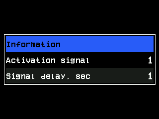

Capteurs du moteur d'entraînement de la turbine
Les cinq capteurs d'un moteur séparé entraînant la turbine du Hectare Mini — allumage, pression d'huile critique, charge de la batterie, niveau de carburant bas, filtre à air — leurs deux réglages et la façon dont le capteur d'allumage conditionne les autres.
Les semoirs dont la turbine est entraînée par son propre moteur peuvent surveiller ce moteur avec jusqu'à cinq capteurs tout ou rien sur un module d'entrée. Chacun est saisi séparément dans le profil. Les cinq ont les mêmes deux réglages et le même écran d'état ; ils diffèrent par la signification du signal.

| Paramètre | Niveau | Fonction | Plage · valeur par défaut |
|---|---|---|---|
| « Activation signal » | Agronomist | Le niveau sur l'entrée, 0 ou 1, qui signifie l'état indiqué dans le tableau ci-dessous. | 0 / 1 · 1 |
| « Signal delay, sec » | Agronomist | Durée pendant laquelle l'entrée doit conserver son nouveau niveau avant que le boîtier accepte le changement — contre les déclenchements intempestifs dus aux vibrations ou à un mauvais contact. | 1 … 30 s · 1 s ; « Low fuel » 15 s, « Air filter » 5 s |
| Capteur | Ce que signifie le signal d'activation | Alarme |
|---|---|---|
| « Ignition » | L'allumage du moteur d'entraînement de la turbine est mis. | aucune — voir ci-dessous |
| « Emergency oil pressure » | La pression d'huile du moteur est trop basse. | oui, uniquement allumage mis |
| « No battery charge » | La batterie n'est pas chargée par le moteur. | oui, uniquement allumage mis |
| « Low fuel » | Il reste peu de carburant dans le réservoir du moteur. | oui |
| « Air filter » | Le filtre à air du moteur est encrassé. | oui |
Les valeurs par défaut de « Signal delay, sec » pour « Low fuel » et « Air filter » sont appliquées quand le capteur est remis à ses valeurs par défaut.
Comment le capteur d'allumage conditionne les autres
Le capteur d'allumage ne déclenche aucune alarme de lui-même. Il maintient silencieux les capteurs de pression d'huile et de charge de la batterie tant que le moteur est arrêté — allumage coupé, une pression d'huile basse et l'absence de charge sont normales. Tant que le capteur d'allumage est sous surveillance, répond et signale l'allumage coupé, ces deux capteurs restent silencieux. Si le capteur d'allumage est hors surveillance ou ne répond pas, ils signalent quel que soit l'état de l'allumage.
C'est pourquoi « Emergency oil pressure » et « No battery charge » ne doivent figurer dans le profil qu'avec « Ignition », et en être retirés avec lui.
Sur l'écran d'accueil, l'indicateur d'allumage est jaune tant que l'allumage est coupé et gris tant qu'il est mis — voir Indicateurs.
L'écran d'état
Affiche Pin: avec le niveau actuel sur l'entrée, "0" ou "1" — comparez-le à l'état réel du moteur pour régler « Activation signal ». Voir L'écran d'état d'un capteur.

Les alarmes et ce qu'il faut contrôler : Alarmes du moteur.
Votre machine fait quelque chose que cette page n'explique pas ? Écrivez à support@agriwelt.com — un ingénieur vous répond.